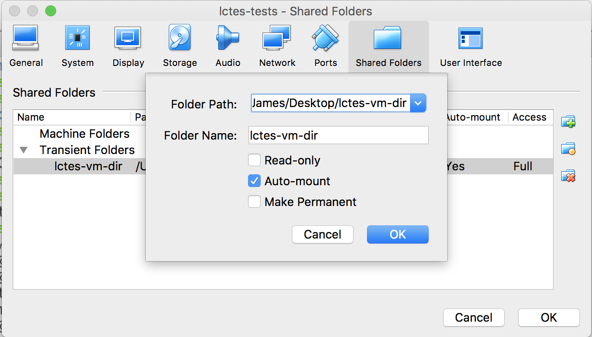

Testing MakeCode and Codal¶
On this website, you will find the information required to reproduce our results gathered for the paper entitled "MakeCode and Codal: Intuitive and Efficient Embedded Systems Programming for Education" using the micro:bit. After reading the entirety of this page, at the top there is a drop down menu labelled tests which provides links to detailed documents on the tests we conducted for each environment using the micro:bit.
Physical requirements¶
- Must have a micro:bit
- Must have a copy of our debian virtual machine with testing environment.
- Must have an oscilloscope available.
Required ability¶
- Must be competent with debian, and terminal.
- Must have some experience with an oscilloscope, or are willing to learn how to use one!
- Understand how to use a serial terminal.
Test procedure¶
Firstly, a virtual machine needs to be downloaded, steps to do this are described in the section entitled Obtaining the virtual machine.
Once you have obtained the virtual machine, the root directory for testing (evaluators) is arranged in the following form:
codalcontains the codal build environment which you will use to conduct codal tests.docscontains the documentation for tests and this overview document. We provide this website for convenience.espruinocontains the espruino interpretter used when testing espruino.makecodecontains a modified copy of the executable web editor that can be run locally.testscontains all of the tests, grouped by each environment, their use is described in thedocsfolder. e.g.docs/codal.mddescribes all tests that are contained intests/codal/*.
Tests either use a serial terminal to validate output, or use an oscilloscope to measure waveforms, in either case the setup pictured below should be adequate for both tests:

The micro:bit is connected to a PC over USB (top of the micro:bit), which also exposes a serial port for a PC to connect to for serial output from the micro:bit. The scope has one probe lead connected to channel one, this probe lead connects to the micro:bit's ground pin (far right of the micro:bit), and samples pin P1 (yellow cable connected to the micro:bit). All tests use pin P1, so no reconfiguration of this setup will be required.
For information on how to use an oscilloscope we recommend this sparkfun tutorial.
We provide minicom installed on the virtual machine to observe serial results. From a terminal run minicom -D /dev/ttyACM0 -b 115200 to communicate with the microbit. -D specifies the device, and -b specifies the baud rate. Pasting into minicom (or more widely, a terminal window) is done through using ctrl + shift + v. To quit minicom, press ctrl + a followed by q.
What is a micro:bit?¶
The micro:bit is a small embedded computer designed for computer science education, MakeCode and Codal were initially designed for the micro:bit, evolving and supporting other devices over time.
Obtaining the virtual machine¶
The virtual machine is contained here in google drive, freely downloadable by anyone.
The virtual machine contains a folder named evaluators which is placed in the home directory of the lctes user. The username for the virtual machine is: lctes and the password is: lctes2018. To become super user, type su in a terminal, and enter the same password (lctes2018).
Once logged in, and in the evaluators directory, you can view the tests as markdown files in the docs directory. Alternately, these markdown documents can also be viewed on the web by running mkdocs serve in the evaluators folder, or browsing to: https://lancaster-university.github.io/lctes-artefact-evaluation/ which is a pre-built, and hosted version produced from the same source.
We recommend that you add the micro:bit usb device using the machine settings tab in virtual box as shown in the image below:

We also have a convenience script for mounting a shared folder between the host and the vm. Simply create a shared folder named lctes-vm-dir and run sh mount.sh (contained in evaluators) as a super user to mount the shared folder to vb-share (also contained in evaluators). Shared folder creation in VirtualBox is pictured below:
